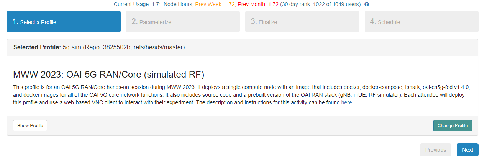
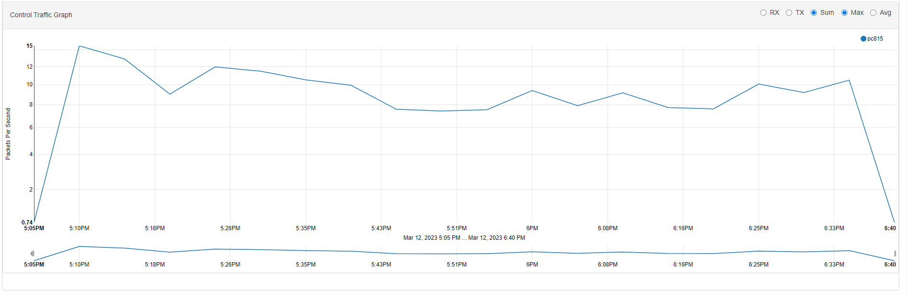

Introduction
Pinging a network is the act of essentially sending a relatively small packet of information (data) from one device to another. In our case, we’ll be pinging from your computer to a 5G network created and initialized on another device created by the Powder web application. Pinging allows us to test the speed, reliability, and overall status of the network connection between the connected devices. It also allows us to:
Troubleshoot Network Problems
Monitor Network Stability
Test Network Performance
Checking Security Breaches
Verifying Network Configuration
Getting Started
Let’s start with our first testbed and experiment as we set up a 5G network simulation on Powder.
Step 1. Launch a web application, go to www.powderwireless.com, and create an account or sign on.
Step 2. Under your username, click on the “Start/Join Project” tab. If this is your first time launching Powder, you’ll be required to start a new project and will most likely have to wait for a confirmation of your project once the information has been submitted. Otherwise, join an existing project and continue on.

Step 3. After starting/joining a project, in the top left, click on the tab under “Experiments” and “Start an Experiment.” From here, we’ll want to simulate a 5G network, so select the profile “5g-sim”. You can use the search function to locate the specific profile.
Step 4. After selecting the profile, click Next, which should take you to schedule the time to run this experiment/testbed. Since resources are limited within Powder, it is necessary to schedule a timeframe to run the experiment to reserve and eventually free up resources required to experiment/testbed. Choose an adequate timeframe and click Next.
Step 5. Once your experiment has been generated, you’ll be notified that the experiment is ready. You’ll want to click on “List Views” near the bottom of the page to find your SSH key associated with the experiment.
Step 6. From here, we can use a terminal within a Linux machine (or virtual machine) and hop on the network with the SSH key that is obtained from the experiment page of Powder. Using the “Ping” command, we can ping the IP of the 5G network simulated by Powder.
Step 7. Moving back to the Powder webpage, click “Graphs,” Here, we can monitor and see all the traffic that resulted from the experiment. Pinging the network should’ve increased the number of packets per second within the control traffic graph.
